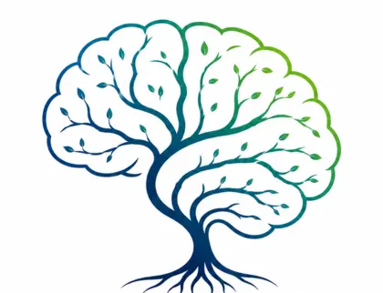
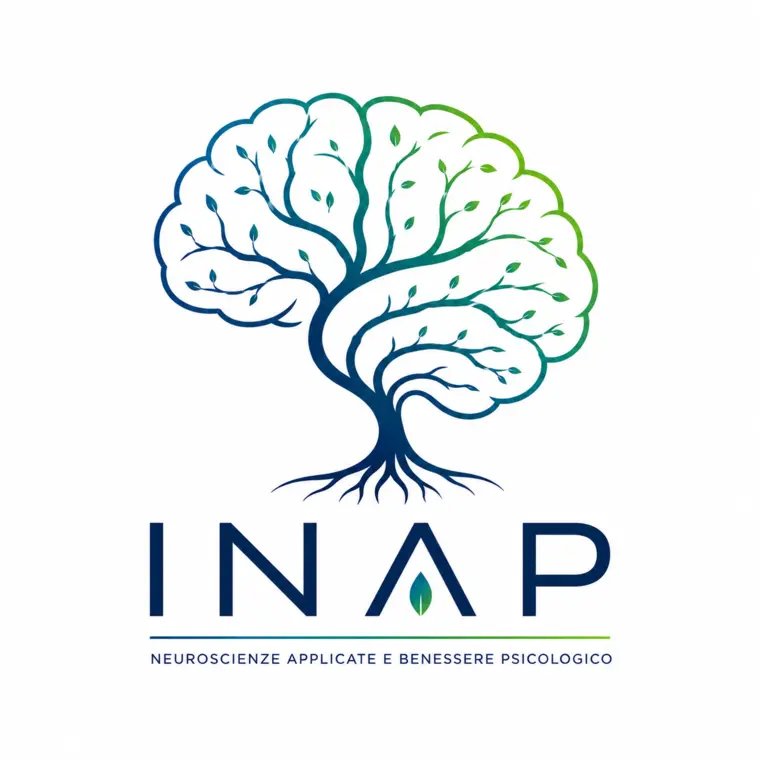
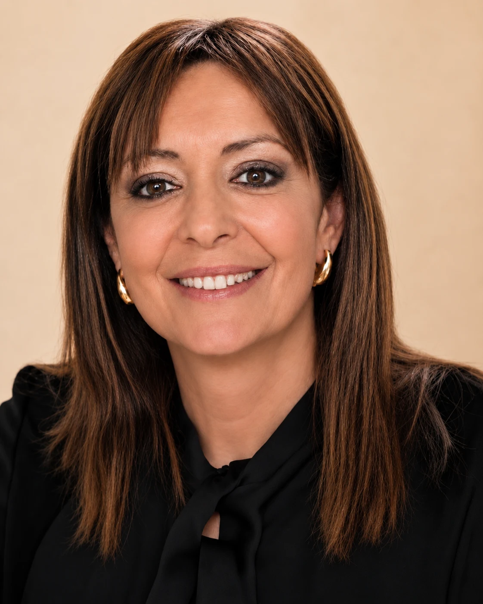
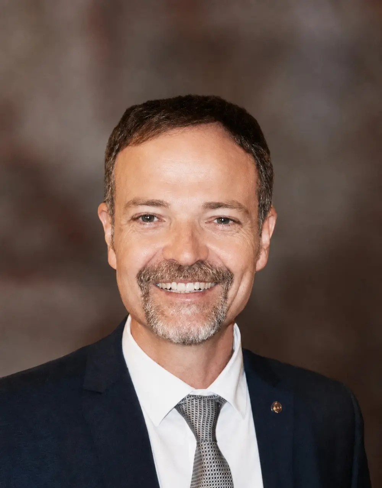
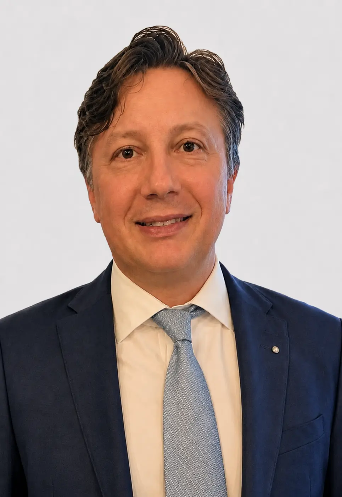
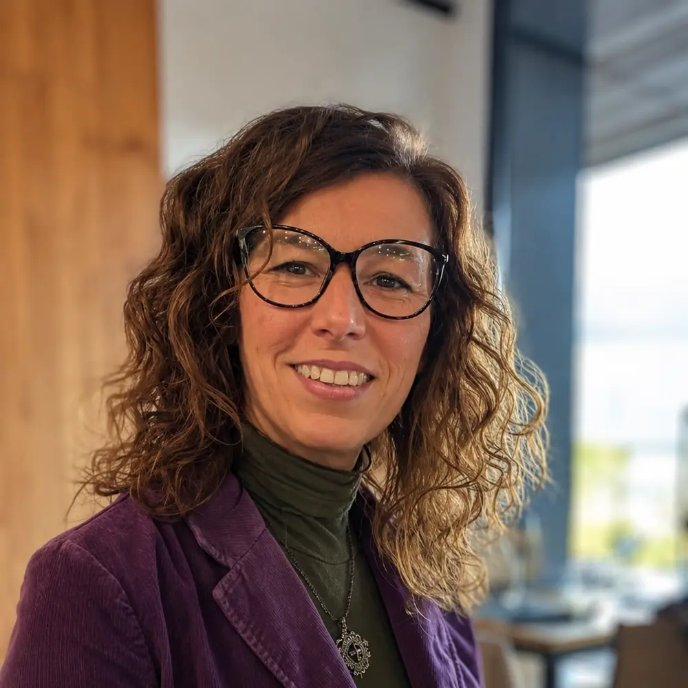
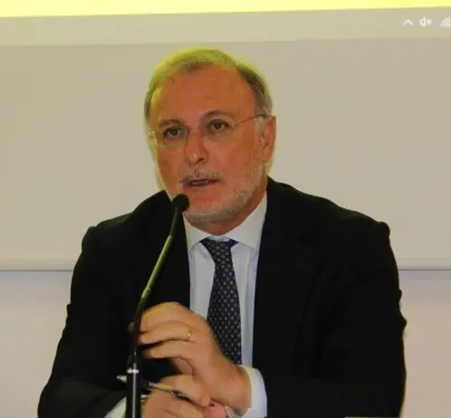
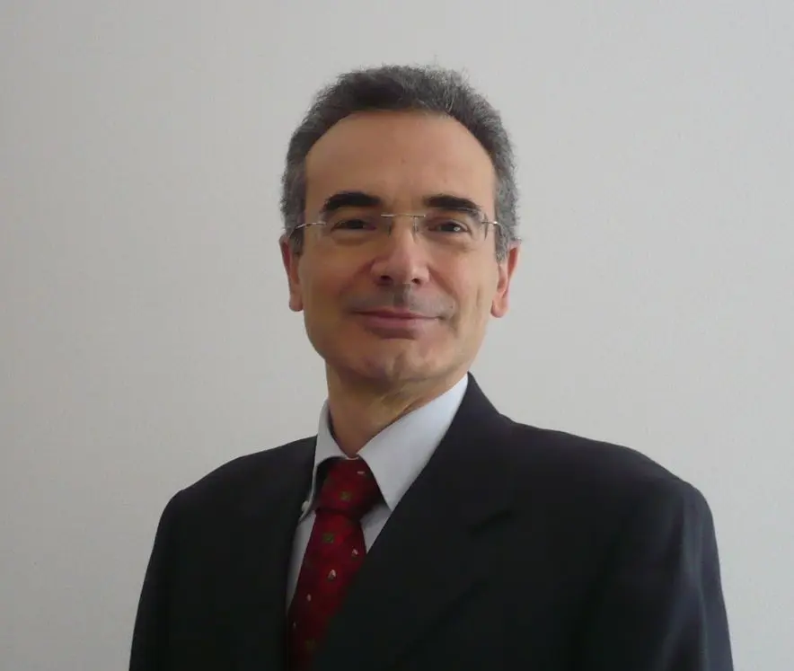

Evidence-based
Ogni iniziativa nasce da conoscenze scientifiche solide, valutate criticamente e tradotte con responsabilità.
INAP è un ponte tra ricerca, professioni e territorio.
Ricevi gli aggiornamenti
INAPNeuroscienze ApplicateSCIENZA · PERSONE · TERRITORIO
Un istituto interdisciplinare che trasforma conoscenze scientifiche affidabili in formazione, ricerca applicata e progetti capaci di migliorare il benessere delle persone e delle organizzazioni.

Connettere competenze.
Generare impatto.
01 — CHI SIAMO
INAP — Istituto per le Neuroscienze Applicate e il Benessere Psicologico — nasce per ridurre la distanza tra ciò che la ricerca scopre e ciò di cui persone, professionisti e organizzazioni hanno concretamente bisogno. Integra neuroscienze cognitive, sociali e affettive, psicologia clinica e positiva, salute mentale, benessere organizzativo e competenze di governance.
L'Istituto è un luogo flessibile di incontro, progettazione e trasferimento scientifico, radicato nel territorio e aperto a reti nazionali e internazionali.
IL NOSTRO METODO
Quattro principi guidano il modo in cui selezioniamo, costruiamo e valutiamo ogni iniziativa.
Ogni iniziativa nasce da conoscenze scientifiche solide, valutate criticamente e tradotte con responsabilità.
Neuroscienze, psicologia, salute, organizzazioni e governance dialogano attorno a problemi reali.
Colleghiamo ricerca e applicazione: dall'idea al progetto, dal progetto alla verifica dei risultati.
Costruiamo alleanze con professionisti, sanità, imprese, istituzioni, associazioni e comunità.
02 — UN'IDENTITÀ, DUE ANIME
UNITÀ OPERATIVA DI SER.IN.AR.
La componente operativa, progettuale e traslazionale. Connette competenze scientifiche, professionali e organizzative per costruire interventi sostenibili e verificabili.
ASSOCIAZIONE DEL TERZO SETTORE
La componente culturale, sociale e filantropica. Diffonde conoscenza affidabile, amplia l'accesso alle opportunità e sostiene il rapporto tra scienza e cittadinanza.
03 — FORMAZIONE ED EVENTI
Percorsi specialistici per professionisti della salute, psicologi e psicoterapeuti in formazione, aziende e organizzazioni.
Ricevi i prossimi programmiProgrammi avanzati, con docenti di riconosciuta esperienza, dedicati all'integrazione tra conoscenze scientifiche e pratica professionale.
Resta aggiornatoProposte su salute mentale, prevenzione, neuroscienze e innovazione clinica, progettate per sostenere competenze realmente trasferibili.
Resta aggiornatoFormazione, ascolto e progettazione per promuovere salute, consapevolezza e qualità delle relazioni nei contesti organizzativi.
Resta aggiornatoDalle tecniche di stimolazione cerebrale alla comprensione dei processi cognitivi, affettivi e sociali.
Modelli, strumenti e pratiche per leggere i bisogni e sostenere percorsi di cura fondati sulle evidenze.
Interventi rivolti a persone e comunità per promuovere risorse psicologiche, resilienza e qualità della vita.
Progetti per organizzazioni più sane, inclusive e capaci di accompagnare il cambiamento.
Conoscenze accessibili e affidabili per avvicinare ricerca, professioni e cittadinanza.
04 — PROGETTI E IMPATTO
INAP costruisce progetti insieme ai propri partner: identifica i bisogni, riunisce le competenze necessarie e integra progettazione, formazione, implementazione e valutazione.
RICERCA E SALUTE
PERSONE E ORGANIZZAZIONI
CONOSCENZA E TERRITORIO
05 — LE PERSONE
Il Comitato scientifico riunisce esperienza scientifica, clinica, sanitaria, organizzativa e istituzionale per affrontare problemi complessi con uno sguardo realmente interdisciplinare.

Direttrice
Psicologa, psicoterapeuta, psicoanalista della Società Psicoanalitica Italiana (SPI), svolge attività clinica con adulti e coppie, e ha competenze in psicodiagnostica, psicologia forense e divulgazione scientifica.

Presidente del Comitato scientifico
Professore ordinario di Neuropsicologia e Neuroscienze cognitive. Studia neuroplasticità, cognizione sociale e neuromodulazione non invasiva.
Comitato scientifico
Dirigente psicologo e psicoterapeuta impegnato nei servizi territoriali per la salute mentale, esperto di dipendenze, disturbi di personalità e prevenzione.

Comitato scientifico
Avvocato e manager con competenze in governance, contratti, gestione del rischio e sostenibilità organizzativa dei progetti complessi.
Comitato scientifico
Professore ordinario di Neuropsicologia e Neuroscienze cognitive, si occupa di coscienza, oscillazioni cerebrali e stimolazione cerebrale non invasiva.

Comitato scientifico
Professoressa di Psicologia clinica, esperta di psicologia positiva, resilienza e interventi per il benessere in contesti sanitari e sociali.
Comitato scientifico
Psichiatra e dirigente sanitario, con esperienza nella salute mentale pubblica, nelle dipendenze e nell'organizzazione dei servizi territoriali.

Comitato scientifico
Professore straordinario in Neurochirurgia, esperto di neuroscienze cliniche, neuro-oncologia e integrazione tra innovazione scientifica e pratica assistenziale.

Comitato scientifico
Professore di Psicologia del lavoro e delle organizzazioni. Studia cambiamento organizzativo, lavoro agile e benessere professionale.
06 — TRASPARENZA
INAP ETS pubblica i propri documenti di governance per garantire trasparenza, accessibilità e responsabilità verso soci, partner e comunità.
DOCUMENTO ISTITUZIONALE